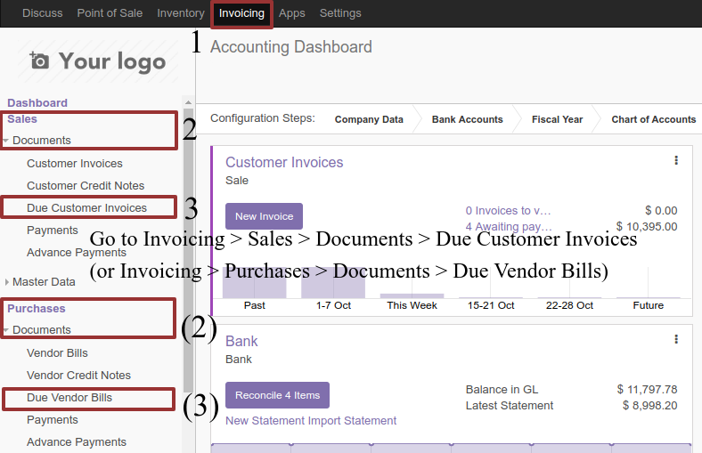
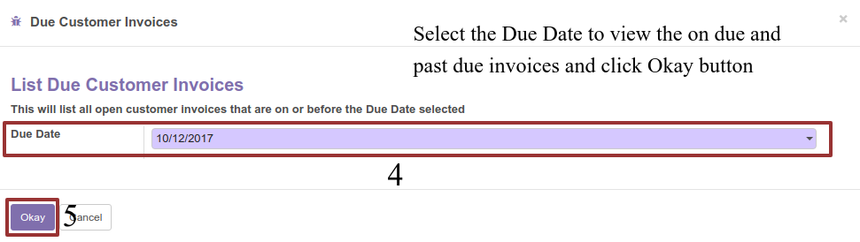
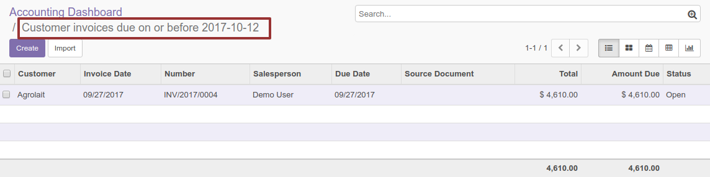

<section class="oe_container">
    <div class="oe_row oe_spaced">
        <h2 class="oe_slogan" style="color:#875A7B;">List Due Invoices</h2>
        <h3 class="oe_slogan">Way to list due invoices based on the selected due date</h3>
    </div>
</section>

<section class="oe_container oe_dark">
    <div class="oe_row oe_spaced">
        <h2 class="oe_slogan" style="color:#875A7B;">Procedures</h2>
        <h3 class="oe_slogan">Easy listing of due customer or vendor invoices</h3>
        <div class="oe_span12 text-center">
            <p class="oe_mt32">
                This will list past due and on due invoices depending on your selected due date.
            </p>
            
            
            
        </div>
    </div>
</section>

<section class="oe_container">
    <div class="oe_row oe_spaced">
        <h2 class="oe_slogan" style="color:#875A7B;">Requests / Comments</h2>
        <h3 class="oe_slogan oe_mb32">Email: <a href="mailto:mac5_odoo@outlook.com">mac5_odoo@outlook.com</a></h3>
        <div class="oe_span12 text-center" style="font-size: 2px;">
            Keywords: Odoo Due Customer Invoices, Odoo Due Vendor Invoices, Odoo Due Supplier Invoices, Odoo Due Vendor Bills, Odoo Due Invoices
        </div>
    </div>
</section>

<section class="oe_container oe_separator">
</section>
